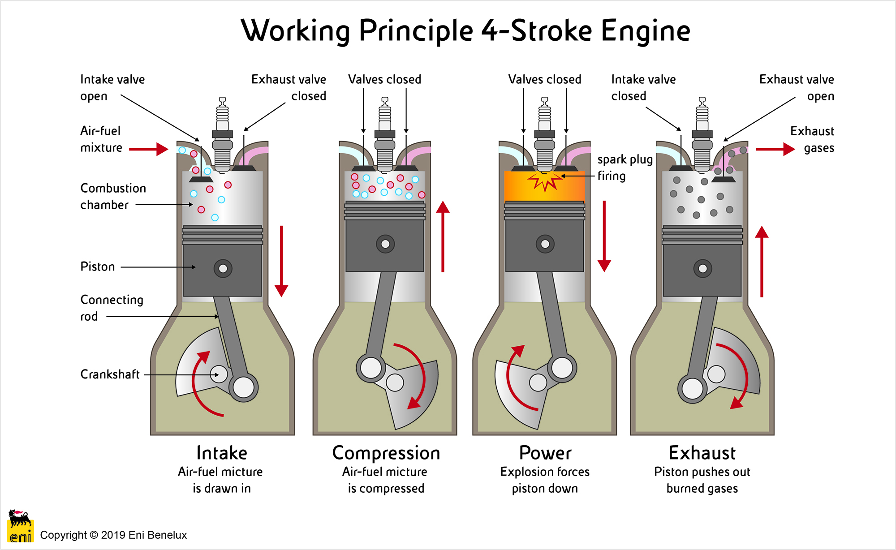

Wat is de definitie van een tweetaktmotor en hoe verschilt deze van een viertaktmotor?
In het kort:
Een tweetaktmotor is een type verbrandingsmotor dat slechts twee arbeidsslagen doorloopt om een volledige verbrandingscyclus te voltooien.
Deze cyclus bestaat uit de compressieslag en de uitlaatslag. In tegenstelling tot de viertaktmotor, voert de tweetaktmotor deze twee slagen uit tijdens één omwenteling van de krukas.
Tweetaktmotor
Een tweetaktmotor voltooit zijn cyclus in slechts twee arbeidsslagen: de compressieslag en de uitlaatslag. Deze compacte cyclus vereist een nauwkeurige afstemming om efficiënte prestaties te waarborgen.
1. Inlaatslag en CompressieslagDe samensmelting van de inlaatslag en compressieslag is een uniek kenmerk van tweetaktmotoren. De zuiger beweegt naar beneden, zuigt het brandstof-luchtmengsel aan en comprimeert het tijdens dezelfde beweging.
2. Verbranding en UitlaatslagDe verbranding en uitlaatslag worden eveneens gecombineerd in de tweede beweging van de zuiger. De ontsteking van het gecomprimeerde mengsel resulteert in een krachtige neerwaartse beweging en drijft gelijktijdig de uitlaatgassen uit.
Tweetaktmotoren staan bekend om hun eenvoudiger ontwerp, met minder bewegende delen en zonder kleppen. Dit minimalisme draagt bij aan lichtere en compactere motoren. De directe koppeling van arbeidsslagen vertaalt zich in een hogere vermogen-tot-gewichtsverhouding, wat tweetaktmotoren geschikt maakt voor toepassingen waar snelheid en wendbaarheid van vitaal belang zijn. Een cruciaal aspect van tweetaktmotoren is de poorttiming, waarbij de opening en sluiting van inlaat- en uitlaatpoorten worden aangepast om de gasstromen te optimaliseren. Dit proces, bekend als "porting", is een geavanceerde tuningtechniek.
Viertaktmotor
In tegenstelling tot tweetaktmotoren doorloopt een viertaktmotor vier afzonderlijke arbeidsslagen: inlaat, compressie, arbeid en uitlaat. Deze uitgebreide cyclus biedt gedetailleerde controle over elk stadium van de verbranding.
1. InlaatslagDe inlaatslag begint met de neerwaartse beweging van de zuiger, waardoor het brandstof-luchtmengsel de cilinder binnenkomt via de inlaatklep.
2. CompressieslagIn de tweede slag beweegt de zuiger naar boven, waardoor het mengsel wordt samengeperst. De inlaatklep sluit om te voorkomen dat het mengsel terugkeert naar de inlaat.
3. ArbeidsslagDe derde slag is de arbeidsslag. Bij het bereiken van het bovenste dode punt ontsteekt de bougie het samengeperste mengsel, wat resulteert in een krachtige neerwaartse beweging van de zuiger, waardoor mechanisch vermogen wordt gegenereerd.
4. UitlaatslagDe laatste slag is de uitlaatslag, waarbij de uitlaatklep opent en de opstijgende zuiger de verbrande gassen uitstoot.
In viertaktmotoren worden de inlaat- en uitlaatkleppen gecontroleerd door de nokkenas, waarbij de timing van de kleppen cruciaal is voor een efficiënte gasuitwisseling. Moderne viertaktmotoren maken gebruik van geavanceerde technologieën zoals elektronische brandstofinjectie en verstelbare nokkenastiming voor een nauwkeurige controle over de verbrandingsprocessen.
Conclusie
In samenvatting verschillen tweetakt- en viertaktmotoren in het aantal arbeidsslagen, het ontwerpniveau en de toepassingen waarvoor ze het meest geschikt zijn. De keuze tussen deze motoren hangt af van het beoogde gebruik en de gewenste prestaties. Bovendien biedt de tweetaktmotor ruimte voor optimalisaties zoals porting, terwijl viertaktmotoren gedetailleerde controle hebben over kleptiming voor prestatieverbeteringen. Deze aanpassingen zijn cruciaal in de wereld van motorprestatieoptimalisatie, waar enthousiastelingen en professionals streven naar het maximaliseren van vermogen, efficiëntie en responsiviteit.
